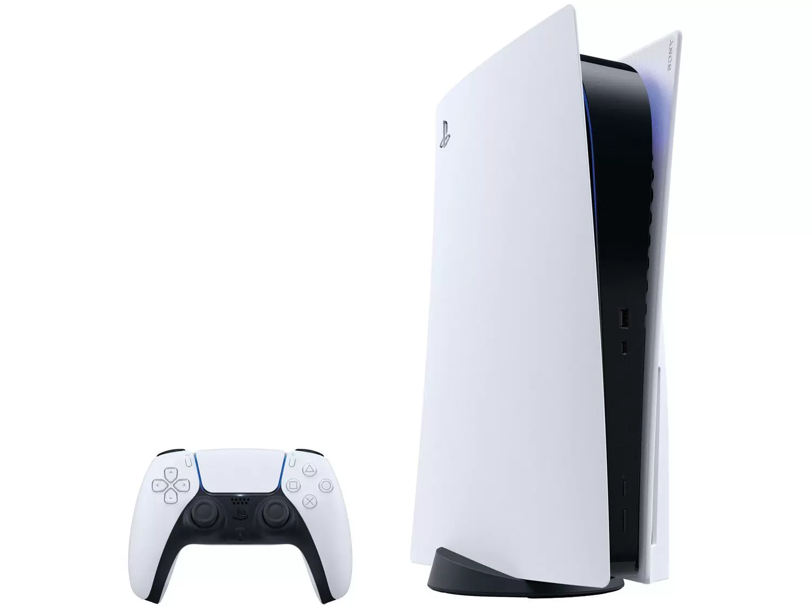

PlayStation 5 825GB 1 Controle Branco Sony
para você que é fanático por jogos, jogar não tem limites! A Sony apresenta o PlayStation 5 2022 na cor branca. Ele tem 825GB de armazenamento SSD, 1 controle sem fio DualSense e acompanha o jogo Astro’s Playroom pré-instalado. O PS5 oferece novas possibilidades de jogabilidade que você nunca imaginou. Reproduza jogos para PS5 e PS4 em Blu-ray Disc. Além disso, você também pode baixar jogos digitais para PS5 e PS4 pela PlayStation Store. Experimente o carregamento extremamente rápido do SSD de ultra-velocidade, uma imersão mais profunda com suporte à resposta tátil, gatilhos adaptáveis e áudio 3D. Além de uma geração totalmente nova de jogos incríveis PlayStation
R$ 5.100;00